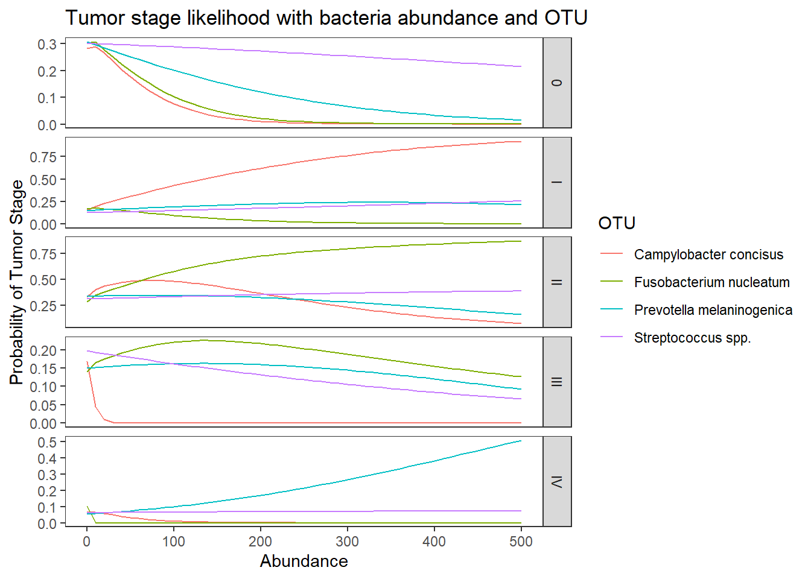
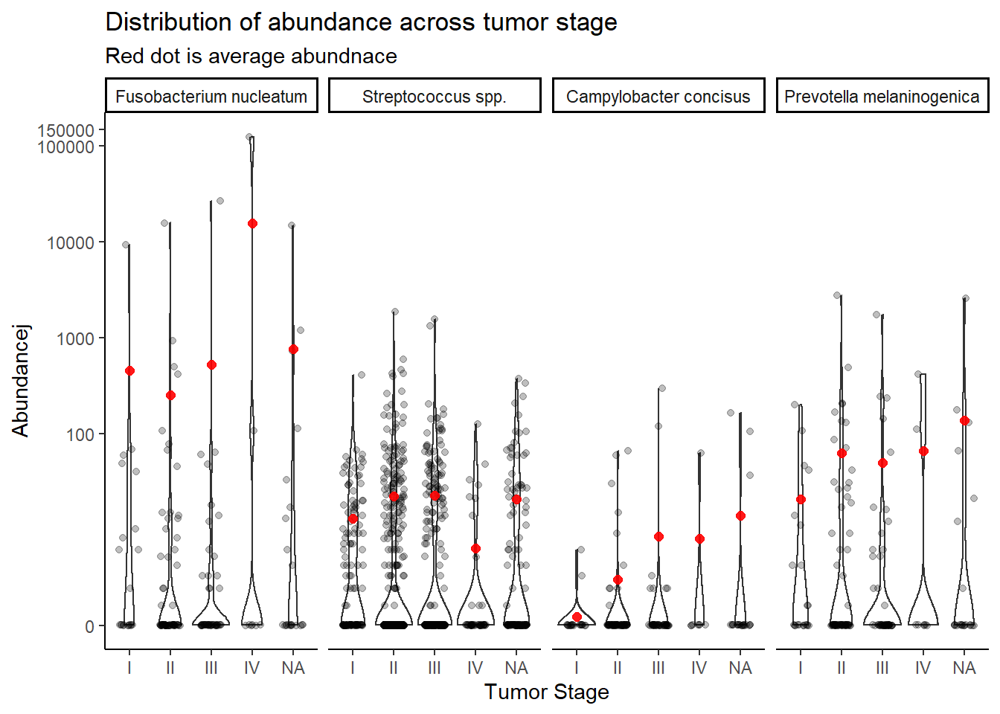

Results Output for Question 3
Last updated: 2021-02-10
Checks: 6 1
Knit directory: esoph-micro-cancer-workflow/
This reproducible R Markdown analysis was created with workflowr (version 1.6.2). The Checks tab describes the reproducibility checks that were applied when the results were created. The Past versions tab lists the development history.
The R Markdown file has unstaged changes. To know which version of the R Markdown file created these results, you’ll want to first commit it to the Git repo. If you’re still working on the analysis, you can ignore this warning. When you’re finished, you can run wflow_publish to commit the R Markdown file and build the HTML.
Great job! The global environment was empty. Objects defined in the global environment can affect the analysis in your R Markdown file in unknown ways. For reproduciblity it’s best to always run the code in an empty environment.
The command set.seed(20200916) was run prior to running the code in the R Markdown file. Setting a seed ensures that any results that rely on randomness, e.g. subsampling or permutations, are reproducible.
Great job! Recording the operating system, R version, and package versions is critical for reproducibility.
Nice! There were no cached chunks for this analysis, so you can be confident that you successfully produced the results during this run.
Great job! Using relative paths to the files within your workflowr project makes it easier to run your code on other machines.
Great! You are using Git for version control. Tracking code development and connecting the code version to the results is critical for reproducibility.
The results in this page were generated with repository version 1e15f06. See the Past versions tab to see a history of the changes made to the R Markdown and HTML files.
Note that you need to be careful to ensure that all relevant files for the analysis have been committed to Git prior to generating the results (you can use wflow_publish or wflow_git_commit). workflowr only checks the R Markdown file, but you know if there are other scripts or data files that it depends on. Below is the status of the Git repository when the results were generated:
Ignored files:
Ignored: .Rhistory
Ignored: .Rproj.user/
Ignored: analysis/figure/
Ignored: data/
Untracked files:
Untracked: analysis/species-sample-type-combined.Rmd
Unstaged changes:
Modified: analysis/index.Rmd
Modified: analysis/results-question-3.Rmd
Note that any generated files, e.g. HTML, png, CSS, etc., are not included in this status report because it is ok for generated content to have uncommitted changes.
These are the previous versions of the repository in which changes were made to the R Markdown (analysis/results-question-3.Rmd) and HTML (docs/results-question-3.html) files. If you’ve configured a remote Git repository (see ?wflow_git_remote), click on the hyperlinks in the table below to view the files as they were in that past version.
| File | Version | Author | Date | Message |
|---|---|---|---|---|
| Rmd | 1e15f06 | noah-padgett | 2021-02-04 | updated multinomial regression results |
| html | 1e15f06 | noah-padgett | 2021-02-04 | updated multinomial regression results |
| Rmd | b9a498d | noah-padgett | 2021-01-26 | fixed issue with subsetting |
| html | b9a498d | noah-padgett | 2021-01-26 | fixed issue with subsetting |
| Rmd | 6585907 | noah-padgett | 2021-01-21 | updated figures with dendrogram |
Question 3
Q3: Is fuso associated with tumor stage (pTNM) in either data set? Does X bacteria predict stage? Multivariable w/ age, sex, BMI, history of Barrett'sAdd to this analysis:
- Fusobacterium nucleatum
- Streptococcus sanguinis
- Campylobacter concisus
- Prevotella spp.
TCGA drop “not reported” from tumor stage.
NCI 16s data
Double Checking Data
# in long format
table(dat.16s$tumor.stage)
0 1 I II III IV
11088 264 6336 13464 6072 2640 # by subject
dat <- dat.16s %>% filter(OTU == "Fusobacterium_nucleatum")
table(dat$tumor.stage)
0 1 I II III IV
42 1 24 51 23 10 sum(table(dat$tumor.stage)) # sample size met[1] 151mean.dat <- dat.16s.s %>%
group_by(tumor.stage, OTU) %>%
summarize(M = mean(Abundance))`summarise()` has grouped output by 'tumor.stage'. You can override using the `.groups` argument.ggplot(dat.16s.s, aes(x=tumor.stage, y=Abundance))+
geom_violin()+
geom_jitter(alpha=0.25,width = 0.25)+
geom_point(data=mean.dat, aes(x=tumor.stage, y = M), size=2, alpha =0.9, color="red")+
labs(x="Tumor Stage",
title="Distribution of abundance across tumor stage",
subtitle="Red dot is average abundnace")+
scale_y_continuous(trans="pseudo_log")+
# breaks=c(0, 10, 100, 200, 300, 400, 500),
# limits = c(0,500),
#
facet_wrap(.~OTU, nrow=1, scales="free")+
theme_classic()Stage “1” has only 1 unique sample and will be dropped from subsequent analyses. And remove NA values.
dat.16s.s <- dat.16s.s %>%
filter(tumor.stage != "1")%>%
mutate(tumor.stage = droplevels(tumor.stage, exclude=c("1",NA)))Multinomial Logistic Regression
Model 1: TS ~ Abundance
fit <- nnet::multinom(tumor.stage ~ OTU, data=dat.16s.s)# weights: 25 (16 variable)
initial value 965.662747
iter 10 value 890.715125
final value 890.698212
convergedsummary(fit)Call:
nnet::multinom(formula = tumor.stage ~ OTU, data = dat.16s.s)
Coefficients:
(Intercept) OTUStreptococcus spp. OTUCampylobacter concisus
I -0.5596182 -1.939649e-05 -2.975175e-06
II 0.1941590 3.455919e-05 -9.943881e-06
III -0.6021807 -1.686834e-05 -3.080810e-06
IV -1.4350638 -4.487214e-05 -4.141397e-05
OTUPrevotella melaninogenica
I 1.219733e-05
II -5.417214e-05
III 1.171972e-05
IV -3.796134e-05
Std. Errors:
(Intercept) OTUStreptococcus spp. OTUCampylobacter concisus
I 0.2558835 0.3618753 0.3618735
II 0.2083683 0.2946764 0.2946771
III 0.2593995 0.3668476 0.3668458
IV 0.3518630 0.4976144 0.4976128
OTUPrevotella melaninogenica
I 0.3618717
II 0.2946779
III 0.3668440
IV 0.4976112
Residual Deviance: 1781.396
AIC: 1813.396 # obtain significance tests
z <- summary(fit)$coefficients/summary(fit)$standard.errors
z (Intercept) OTUStreptococcus spp. OTUCampylobacter concisus
I -2.1870038 -5.359994e-05 -8.221589e-06
II 0.9318068 1.172784e-04 -3.374500e-05
III -2.3214412 -4.598187e-05 -8.398106e-06
IV -4.0784727 -9.017453e-05 -8.322530e-05
OTUPrevotella melaninogenica
I 3.370623e-05
II -1.838351e-04
III 3.194742e-05
IV -7.628716e-05p <- (1 - pnorm(abs(z), 0, 1)) * 2
p (Intercept) OTUStreptococcus spp. OTUCampylobacter concisus
I 2.874225e-02 0.9999572 0.9999934
II 3.514364e-01 0.9999064 0.9999731
III 2.026304e-02 0.9999633 0.9999933
IV 4.533253e-05 0.9999281 0.9999336
OTUPrevotella melaninogenica
I 0.9999731
II 0.9998533
III 0.9999745
IV 0.9999391## extract the coefficients from the model and exponentiate
exp(coef(fit)) # interpret as relative risks (Intercept) OTUStreptococcus spp. OTUCampylobacter concisus
I 0.5714272 0.9999806 0.9999970
II 1.2142894 1.0000346 0.9999901
III 0.5476162 0.9999831 0.9999969
IV 0.2381002 0.9999551 0.9999586
OTUPrevotella melaninogenica
I 1.0000122
II 0.9999458
III 1.0000117
IV 0.9999620# save fitted logits
pp <- fitted(fit)
# preditive data
dotu <- data.frame(OTU = c("Fusobacterium nucleatum", "Streptococcus spp.", "Campylobacter concisus", "Prevotella melaninogenica"))
predict(fit, newdata = dotu, "probs") # only TINY differences 0 I II III IV
1 0.2799997 0.1599994 0.3400006 0.1533323 0.06666797
2 0.2799988 0.1599958 0.3400113 0.1533293 0.06666477
3 0.2800016 0.1600001 0.3399996 0.1533330 0.06666568
4 0.2800045 0.1600041 0.3399880 0.1533368 0.06666658## store the predicted probabilities for each value of ses
pp.otu <-cbind(dotu, predict(fit, newdata = dotu, "probs", se = TRUE))
## calculate the mean probabilities within each level of OTU
by(pp.otu[, 2:6], pp.otu$OTU, colMeans)pp.otu$OTU: Campylobacter concisus
0 I II III IV
0.28000165 0.16000008 0.33999964 0.15333295 0.06666568
------------------------------------------------------------
pp.otu$OTU: Fusobacterium nucleatum
0 I II III IV
0.27999966 0.15999942 0.34000061 0.15333234 0.06666797
------------------------------------------------------------
pp.otu$OTU: Prevotella melaninogenica
0 I II III IV
0.28000448 0.16000412 0.33998804 0.15333677 0.06666658
------------------------------------------------------------
pp.otu$OTU: Streptococcus spp.
0 I II III IV
0.27999880 0.15999583 0.34001132 0.15332928 0.06666477 Model 2: TS ~ OTU + Abundance
fit <- nnet::multinom(tumor.stage ~ OTU + Abundance, data=dat.16s.s)# weights: 30 (20 variable)
initial value 965.662747
iter 10 value 894.405308
iter 20 value 888.437951
final value 888.305310
convergedsummary(fit)Call:
nnet::multinom(formula = tumor.stage ~ OTU + Abundance, data = dat.16s.s)
Coefficients:
(Intercept) OTUStreptococcus spp. OTUCampylobacter concisus
I -0.6047834 -0.30035344 0.039373096
II 0.1463525 -0.31682370 0.041724283
III -0.6049882 -0.02017896 0.002330615
IV -1.4661115 -0.21051068 0.026960717
OTUPrevotella melaninogenica Abundance
I -0.020932505 0.0025475291
II -0.021835924 0.0026689058
III -0.001713673 0.0001950689
IV -0.015798446 0.0018570425
Std. Errors:
(Intercept) OTUStreptococcus spp. OTUCampylobacter concisus
I 0.2581762 0.4212445 0.3631679
II 0.2102088 0.3420791 0.2957261
III 0.2609537 0.4173638 0.3676527
IV 0.3546729 0.5765377 0.4991427
OTUPrevotella melaninogenica Abundance
I 0.3624405 0.001759452
II 0.2953331 0.001474358
III 0.3672344 0.001927145
IV 0.4981078 0.002413791
Residual Deviance: 1776.611
AIC: 1816.611 # obtain significance tests
z <- summary(fit)$coefficients/summary(fit)$standard.errors
z (Intercept) OTUStreptococcus spp. OTUCampylobacter concisus
I -2.3425216 -0.7130145 0.108415695
II 0.6962244 -0.9261709 0.141090984
III -2.3183736 -0.0483486 0.006339176
IV -4.1337000 -0.3651291 0.054014042
OTUPrevotella melaninogenica Abundance
I -0.057754322 1.4479109
II -0.073936603 1.8102152
III -0.004666429 0.1012217
IV -0.031716924 0.7693468p <- (1 - pnorm(abs(z), 0, 1)) * 2
p (Intercept) OTUStreptococcus spp. OTUCampylobacter concisus
I 1.915392e-02 0.4758368 0.9136660
II 4.862883e-01 0.3543572 0.8877981
III 2.042903e-02 0.9614384 0.9949421
IV 3.569693e-05 0.7150150 0.9569240
OTUPrevotella melaninogenica Abundance
I 0.9539443 0.14764197
II 0.9410608 0.07026243
III 0.9962767 0.91937448
IV 0.9746978 0.44168748## extract the coefficients from the model and exponentiate
exp(coef(fit)) # interpret as relative risks (Intercept) OTUStreptococcus spp. OTUCampylobacter concisus
I 0.5461927 0.7405564 1.040158
II 1.1576041 0.7284592 1.042607
III 0.5460809 0.9800233 1.002333
IV 0.2308213 0.8101704 1.027327
OTUPrevotella melaninogenica Abundance
I 0.9792851 1.002551
II 0.9784008 1.002672
III 0.9982878 1.000195
IV 0.9843257 1.001859# save fitted logits
pp <- fitted(fit)
# predit data
dotu <- data.frame(OTU = c("Fusobacterium nucleatum", "Streptococcus spp.", "Campylobacter concisus", "Prevotella melaninogenica"), Abundance = mean(dat.16s.s$Abundance))
predict(fit, newdata = dotu, "probs") # bigger differences 0 I II III IV
1 0.2681362 0.1649697 0.3516266 0.1477649 0.06750260
2 0.3169635 0.1444163 0.3027895 0.1711834 0.06464735
3 0.2619039 0.1676063 0.3580873 0.1446672 0.06773543
4 0.2714817 0.1635681 0.3483242 0.1493524 0.06727357## look at the averaged predicted probabilities for different values of the continuous predictor variable Abundnace within each level of OTU
dabund <- data.frame(
OTU = rep(c("Fusobacterium nucleatum", "Streptococcus spp.", "Campylobacter concisus", "Prevotella melaninogenica"), each = 51),
Abundance = rep(seq(0, 500,10), 4)
)
pp.abund <-cbind(dabund, predict(fit, newdata = dabund, "probs", se = TRUE))
## calculate the mean probabilities within each level of OTU
by(pp.abund[, 3:7], pp.abund$OTU, colMeans)pp.abund$OTU: Campylobacter concisus
0 I II III IV
0.18989671 0.19803248 0.43454900 0.10836285 0.06915896
------------------------------------------------------------
pp.abund$OTU: Fusobacterium nucleatum
0 I II III IV
0.19511229 0.19583452 0.42873939 0.11108923 0.06922457
------------------------------------------------------------
pp.abund$OTU: Prevotella melaninogenica
0 I II III IV
0.19792008 0.19465222 0.42577802 0.11249991 0.06914977
------------------------------------------------------------
pp.abund$OTU: Streptococcus spp.
0 I II III IV
0.23733975 0.17799437 0.38347788 0.13252137 0.06866663 ## melt data set to long for ggplot2
lpp <- melt(pp.abund, id.vars = c("OTU", "Abundance"), value.name = "probability")
## plot predicted probabilities across Abundance values for each level of OTU
## facetted by tumor.stage
ggplot(lpp, aes(x = Abundance, y = probability, colour = OTU)) +
geom_line() +
facet_grid(variable ~., scales="free")+
labs(y="Probability of Tumor Stage",
title="Tumor stage likelihood with bacteria abundance and OTU")+
theme(
panel.grid = element_blank()
)
Model 3: TS ~ OTU + Abundance + OTU:Abundnace
fit <- nnet::multinom(tumor.stage ~ OTU + Abundance + OTU:Abundance, data=dat.16s.s)# weights: 45 (32 variable)
initial value 965.662747
iter 10 value 941.863626
iter 20 value 901.231110
iter 30 value 879.803956
iter 40 value 878.496840
iter 50 value 877.769589
iter 50 value 877.769583
iter 50 value 877.769583
final value 877.769583
convergedsummary(fit)Call:
nnet::multinom(formula = tumor.stage ~ OTU + Abundance + OTU:Abundance,
data = dat.16s.s)
Coefficients:
(Intercept) OTUStreptococcus spp. OTUCampylobacter concisus
I -0.59627225 -0.27271221 -0.02313882
II -0.04841984 0.08882484 0.20646287
III -0.77491056 0.35263258 0.25421326
IV -1.07350821 -0.49271665 -0.35516007
OTUPrevotella melaninogenica Abundance OTUStreptococcus spp.:Abundance
I -0.12547323 0.005306701 -0.003204521
II 0.14193593 0.017741150 -0.016633470
III 0.06042278 0.015333265 -0.016845951
IV -0.66866510 -0.390337397 0.391291144
OTUCampylobacter concisus:Abundance OTUPrevotella melaninogenica:Abundance
I 0.0181909576 0.001365729
II -0.0007532923 -0.013204522
III -0.1484115828 -0.010359127
IV 0.3856873183 0.400781470
Std. Errors:
(Intercept) OTUStreptococcus spp. OTUCampylobacter concisus
I 0.2704470 0.4774130 0.3781801
II 0.2279863 0.3833642 0.3126257
III 0.2791141 0.4593983 0.3875920
IV 0.3763586 0.6462099 0.5206078
OTUPrevotella melaninogenica Abundance OTUStreptococcus spp.:Abundance
I 0.4006033 0.012397294 0.012552129
II 0.3301150 0.009700164 0.009838977
III 0.4081087 0.010049130 0.010290832
IV 0.5627898 0.370175948 0.370186103
OTUCampylobacter concisus:Abundance OTUPrevotella melaninogenica:Abundance
I 0.02888437 0.01374055
II 0.02686202 0.01111699
III 0.17149082 0.01184750
IV 0.37439040 0.37023237
Residual Deviance: 1755.539
AIC: 1819.539 # obtain significance tests
z <- summary(fit)$coefficients/summary(fit)$standard.errors
z (Intercept) OTUStreptococcus spp. OTUCampylobacter concisus
I -2.2047656 -0.5712291 -0.06118464
II -0.2123805 0.2316983 0.66041547
III -2.7763223 0.7675965 0.65587854
IV -2.8523545 -0.7624715 -0.68220277
OTUPrevotella melaninogenica Abundance OTUStreptococcus spp.:Abundance
I -0.3132107 0.4280531 -0.255297
II 0.4299590 1.8289536 -1.690569
III 0.1480556 1.5258300 -1.636986
IV -1.1881259 -1.0544645 1.057012
OTUCampylobacter concisus:Abundance OTUPrevotella melaninogenica:Abundance
I 0.62978554 0.09939408
II -0.02804303 -1.18777856
III -0.86542001 -0.87437230
IV 1.03017416 1.08251330p <- (1 - pnorm(abs(z), 0, 1)) * 2
p (Intercept) OTUStreptococcus spp. OTUCampylobacter concisus
I 0.027470545 0.5678444 0.9512122
II 0.831810220 0.8167723 0.5089872
III 0.005497769 0.4427269 0.5119023
IV 0.004339667 0.4457787 0.4951107
OTUPrevotella melaninogenica Abundance OTUStreptococcus spp.:Abundance
I 0.7541206 0.66861244 0.79849374
II 0.6672254 0.06740656 0.09091913
III 0.8822989 0.12705220 0.10163334
IV 0.2347838 0.29167030 0.29050612
OTUCampylobacter concisus:Abundance OTUPrevotella melaninogenica:Abundance
I 0.5288349 0.9208254
II 0.9776278 0.2349207
III 0.3868083 0.3819155
IV 0.3029283 0.2790245## extract the coefficients from the model and exponentiate
exp(coef(fit)) # interpret as relative risks (Intercept) OTUStreptococcus spp. OTUCampylobacter concisus
I 0.5508613 0.7613119 0.9771268
II 0.9527337 1.0928892 1.2293221
III 0.4607450 1.4228083 1.2894468
IV 0.3418073 0.6109644 0.7010612
OTUPrevotella melaninogenica Abundance OTUStreptococcus spp.:Abundance
I 0.8820794 1.0053208 0.9968006
II 1.1525028 1.0178995 0.9835041
III 1.0622856 1.0154514 0.9832951
IV 0.5123921 0.6768285 1.4788890
OTUCampylobacter concisus:Abundance OTUPrevotella melaninogenica:Abundance
I 1.0183574 1.0013667
II 0.9992470 0.9868823
III 0.8620762 0.9896943
IV 1.4706248 1.4929910# save fitted logits
pp <- fitted(fit)
# predit data
gmeans <- dat.16s.s %>% group_by(OTU) %>% summarise(M = mean(Abundance))
dotu <- data.frame(OTU = c("Fusobacterium nucleatum", "Streptococcus spp.", "Campylobacter concisus", "Prevotella melaninogenica"), Abundance = gmeans$M)
predict(fit, newdata = dotu, "probs") # bigger differences 0 I II III IV
1 0.2819113 0.1714285 0.3737664 0.1728267 6.703098e-05
2 0.2819423 0.1585211 0.3426071 0.1496748 6.725471e-02
3 0.2889414 0.1641112 0.3518175 0.1266238 6.850608e-02
4 0.2771348 0.1607634 0.3432581 0.1547942 6.404947e-02## look at the averaged predicted probabilities for different values of the continuous predictor variable Abundnace within each level of OTU
dabund <- data.frame(
OTU = rep(c("Fusobacterium nucleatum", "Streptococcus spp.", "Campylobacter concisus", "Prevotella melaninogenica"), each = 51),
Abundance = rep(seq(0, 500,10), 4)
)
pp.abund <-cbind(dabund, predict(fit, newdata = dabund, "probs", se = TRUE))
## calculate the mean probabilities within each level of OTU
by(pp.abund[, 3:7], pp.abund$OTU, colMeans)pp.abund$OTU: Campylobacter concisus
0 I II III IV
0.046191605 0.645572197 0.294955139 0.004460403 0.008820657
------------------------------------------------------------
pp.abund$OTU: Fusobacterium nucleatum
0 I II III IV
0.056138561 0.047243286 0.709510663 0.185038112 0.002069378
------------------------------------------------------------
pp.abund$OTU: Prevotella melaninogenica
0 I II III IV
0.1157777 0.2142867 0.2882000 0.1418134 0.2399222
------------------------------------------------------------
pp.abund$OTU: Streptococcus spp.
0 I II III IV
0.26143295 0.18858714 0.35802418 0.12294118 0.06901454 ## melt data set to long for ggplot2
lpp <- melt(pp.abund, id.vars = c("OTU", "Abundance"), value.name = "probability")
## plot predicted probabilities across Abundance values for each level of OTU
## facetted by tumor.stage
ggplot(lpp, aes(x = Abundance, y = probability, colour = OTU)) +
geom_line() +
facet_grid(variable ~., scales="free")+
labs(y="Probability of Tumor Stage",
title="Tumor stage likelihood with bacteria abundance and OTU")+
theme(
panel.grid = element_blank()
)
TCGA RNAseq data
Double Checking Data
# in long format
table(dat.rna$tumor.stage)
I II III IV
16359 55309 39729 6232 # by subject
dat <- dat.rna %>% filter(OTU == "Fusobacterium nucleatum")
table(dat$tumor.stage)
I II III IV
21 71 51 8 sum(table(dat$tumor.stage)) # sample size met[1] 151dat.rna.s$Abundancej <- dat.rna.s$Abundance+0.01
mean.dat <- dat.rna.s %>%
group_by(tumor.stage, OTU) %>%
summarize(M = mean(Abundance))`summarise()` has grouped output by 'tumor.stage'. You can override using the `.groups` argument.ggplot(dat.rna.s, aes(x=tumor.stage, y=Abundancej))+
geom_violin()+
geom_jitter(alpha=0.25,width = 0.25)+
geom_point(data=mean.dat, aes(x=tumor.stage, y = M), size=2, alpha =0.9, color="red")+
labs(x="Tumor Stage",
title="Distribution of abundance across tumor stage",
subtitle="Red dot is average abundnace")+
scale_y_continuous(
breaks=c(0, 100, 1000, 10000, 100000, 150000),
#limits = c(0,500),
trans="pseudo_log")+
facet_wrap(.~OTU, nrow=1)+
theme_classic()
Multinomial Logistic Regression
Model 1: TS ~ Abundance
fit <- nnet::multinom(tumor.stage ~ OTU, data=dat.rna.s)# weights: 20 (12 variable)
initial value 1883.974037
iter 10 value 1566.684823
final value 1564.788361
convergedsummary(fit)Call:
nnet::multinom(formula = tumor.stage ~ OTU, data = dat.rna.s)
Coefficients:
(Intercept) OTUStreptococcus spp. OTUCampylobacter concisus
II 1.2181362 1.612699e-05 5.420841e-05
III 0.8872408 -4.489247e-06 1.323503e-04
IV -0.9655016 4.282208e-04 2.974206e-04
OTUPrevotella melaninogenica
II 1.180849e-04
III 7.358456e-05
IV 2.958596e-04
Std. Errors:
(Intercept) OTUStreptococcus spp. OTUCampylobacter concisus
II 0.2483960 0.2682988 0.3512914
III 0.2592769 0.2800517 0.3666773
IV 0.4155267 0.4488111 0.5876245
OTUPrevotella melaninogenica
II 0.3512910
III 0.3666798
IV 0.5876261
Residual Deviance: 3129.577
AIC: 3153.577 # obtain significance tests
z <- summary(fit)$coefficients/summary(fit)$standard.errors
z (Intercept) OTUStreptococcus spp. OTUCampylobacter concisus
II 4.904009 6.010831e-05 0.0001543118
III 3.421981 -1.603006e-05 0.0003609449
IV -2.323561 9.541226e-04 0.0005061405
OTUPrevotella melaninogenica
II 0.0003361456
III 0.0002006780
IV 0.0005034828p <- (1 - pnorm(abs(z), 0, 1)) * 2
p (Intercept) OTUStreptococcus spp. OTUCampylobacter concisus
II 9.389999e-07 0.9999520 0.9998769
III 6.216659e-04 0.9999872 0.9997120
IV 2.014904e-02 0.9992387 0.9995962
OTUPrevotella melaninogenica
II 0.9997318
III 0.9998399
IV 0.9995983## extract the coefficients from the model and exponentiate
exp(coef(fit)) # interpret as relative risks (Intercept) OTUStreptococcus spp. OTUCampylobacter concisus
II 3.3808806 1.0000161 1.000054
III 2.4284199 0.9999955 1.000132
IV 0.3807921 1.0004283 1.000297
OTUPrevotella melaninogenica
II 1.000118
III 1.000074
IV 1.000296# save fitted logits
pp <- fitted(fit)
# preditive data
dotu <- data.frame(OTU = c("Fusobacterium nucleatum", "Streptococcus spp.", "Campylobacter concisus", "Prevotella melaninogenica"))
predict(fit, newdata = dotu, "probs") # only TINY differences I II III IV
1 0.1390803 0.4702138 0.3377453 0.05296067
2 0.1390763 0.4702078 0.3377341 0.05298183
3 0.1390683 0.4701989 0.3377610 0.05297187
4 0.1390669 0.4702241 0.3377377 0.05297125## store the predicted probabilities for each value of ses
pp.otu <-cbind(dotu, predict(fit, newdata = dotu, "probs", se = TRUE))
## calculate the mean probabilities within each level of OTU
by(pp.otu[, 2:5], pp.otu$OTU, colMeans)pp.otu$OTU: Campylobacter concisus
I II III IV
0.13906831 0.47019885 0.33776096 0.05297187
------------------------------------------------------------
pp.otu$OTU: Fusobacterium nucleatum
I II III IV
0.13908026 0.47021378 0.33774529 0.05296067
------------------------------------------------------------
pp.otu$OTU: Prevotella melaninogenica
I II III IV
0.13906691 0.47022414 0.33773770 0.05297125
------------------------------------------------------------
pp.otu$OTU: Streptococcus spp.
I II III IV
0.13907627 0.47020784 0.33773406 0.05298183 Model 2: TS ~ OTU + Abundance
fit <- nnet::multinom(tumor.stage ~ OTU + Abundance, data=dat.rna.s)# weights: 24 (15 variable)
initial value 1883.974037
iter 10 value 1583.114897
iter 20 value 1561.973672
final value 1561.966301
convergedsummary(fit)Call:
nnet::multinom(formula = tumor.stage ~ OTU + Abundance, data = dat.rna.s)
Coefficients:
(Intercept) OTUStreptococcus spp. OTUCampylobacter concisus
II 1.2223820 -0.003922936 -0.003953146
III 0.8824898 0.004632690 0.004974597
IV -1.1199777 0.154052453 0.154872317
OTUPrevotella melaninogenica Abundance
II -0.003549956 -1.318433e-05
III 0.004212484 1.075128e-05
IV 0.151986559 5.025792e-05
Std. Errors:
(Intercept) OTUStreptococcus spp. OTUCampylobacter concisus
II 0.07557565 0.09072775 0.08689443
III 0.07960033 0.09603308 0.08480810
IV 0.09845530 0.09426987 0.04516448
OTUPrevotella melaninogenica Abundance
II 0.08695669 8.403456e-05
III 0.08482469 7.405390e-05
IV 0.04511175 7.293706e-05
Residual Deviance: 3123.933
AIC: 3153.933 # obtain significance tests
z <- summary(fit)$coefficients/summary(fit)$standard.errors
z (Intercept) OTUStreptococcus spp. OTUCampylobacter concisus
II 16.17428 -0.04323854 -0.04549366
III 11.08651 0.04824056 0.05865710
IV -11.37549 1.63416424 3.42907305
OTUPrevotella melaninogenica Abundance
II -0.04082441 -0.1568918
III 0.04966106 0.1451818
IV 3.36911230 0.6890589p <- (1 - pnorm(abs(z), 0, 1)) * 2
p (Intercept) OTUStreptococcus spp. OTUCampylobacter concisus
II 0 0.9655114 0.9637138257
III 0 0.9615245 0.9532252334
IV 0 0.1022244 0.0006056465
OTUPrevotella melaninogenica Abundance
II 0.967435878 0.8753301
III 0.960392485 0.8845674
IV 0.000754107 0.4907862## extract the coefficients from the model and exponentiate
exp(coef(fit)) # interpret as relative risks (Intercept) OTUStreptococcus spp. OTUCampylobacter concisus
II 3.3952655 0.9960847 0.9960547
III 2.4169098 1.0046434 1.0049870
IV 0.3262871 1.1665521 1.1675089
OTUPrevotella melaninogenica Abundance
II 0.9964563 0.9999868
III 1.0042214 1.0000108
IV 1.1641446 1.0000503# save fitted logits
pp <- fitted(fit)
# predit data
dotu <- data.frame(OTU = c("Fusobacterium nucleatum", "Streptococcus spp.", "Campylobacter concisus", "Prevotella melaninogenica"), Abundance = mean(dat.rna.s$Abundance))
predict(fit, newdata = dotu, "probs") # bigger differences I II III IV
1 0.1400928 0.4747230 0.3391318 0.04605243
2 0.1390656 0.4693972 0.3382085 0.05332866
3 0.1390454 0.4693149 0.3382750 0.05336465
4 0.1390763 0.4696085 0.3380925 0.05322270## look at the averaged predicted probabilities for different values of the continuous predictor variable Abundnace within each level of OTU
dabund <- data.frame(
OTU = rep(c("Fusobacterium nucleatum", "Streptococcus spp.", "Campylobacter concisus", "Prevotella melaninogenica"), each = 51),
Abundance = rep(seq(0, 500,10), 4)
)
pp.abund <-cbind(dabund, predict(fit, newdata = dabund, "probs", se = TRUE))
## calculate the mean probabilities within each level of OTU
by(pp.abund[, 3:6], pp.abund$OTU, colMeans)pp.abund$OTU: Campylobacter concisus
I II III IV
0.13904297 0.46867881 0.33863960 0.05363862
------------------------------------------------------------
pp.abund$OTU: Fusobacterium nucleatum
I II III IV
0.14009647 0.47410032 0.33951229 0.04629091
------------------------------------------------------------
pp.abund$OTU: Prevotella melaninogenica
I II III IV
0.13907406 0.46897265 0.33845728 0.05349601
------------------------------------------------------------
pp.abund$OTU: Streptococcus spp.
I II III IV
0.13906321 0.46876120 0.33857312 0.05360246 ## melt data set to long for ggplot2
lpp <- melt(pp.abund, id.vars = c("OTU", "Abundance"), value.name = "probability")
## plot predicted probabilities across Abundance values for each level of OTU
## facetted by tumor.stage
ggplot(lpp, aes(x = Abundance, y = probability, colour = OTU)) +
geom_line() +
facet_grid(variable ~., scales="free")+
labs(y="Probability of Tumor Stage",
title="Tumor stage likelihood with bacteria abundance and OTU")+
theme(
panel.grid = element_blank()
)
Model 3: TS ~ OTU + Abundance + OTU:Abundnace
fit <- nnet::multinom(tumor.stage ~ OTU + Abundance + OTU:Abundance, data=dat.rna.s)# weights: 36 (24 variable)
initial value 1883.974037
iter 10 value 1755.243497
iter 20 value 1578.233029
iter 30 value 1559.100611
iter 40 value 1557.762012
iter 50 value 1557.755273
final value 1557.755203
convergedsummary(fit)Call:
nnet::multinom(formula = tumor.stage ~ OTU + Abundance + OTU:Abundance,
data = dat.rna.s)
Coefficients:
(Intercept) OTUStreptococcus spp. OTUCampylobacter concisus
II 1.226420 -0.03665663 -0.05037347
III 0.885271 -0.02687636 -0.07806097
IV -1.119301 0.24098068 0.07696960
OTUPrevotella melaninogenica Abundance OTUStreptococcus spp.:Abundance
II -0.05421043 -2.453567e-05 0.001777190
III -0.03401722 4.203709e-06 0.001771215
IV 0.10598889 4.488828e-05 -0.010103368
OTUCampylobacter concisus:Abundance OTUPrevotella melaninogenica:Abundance
II 0.04286102 0.001411664
III 0.05084790 0.001207072
IV 0.05041020 0.001372158
Std. Errors:
(Intercept) OTUStreptococcus spp. OTUCampylobacter concisus
II 0.07750445 0.09342979 0.08889085
III 0.08179267 0.09896120 0.08678082
IV 0.10292173 0.09824740 0.04606603
OTUPrevotella melaninogenica Abundance OTUStreptococcus spp.:Abundance
II 0.08850307 8.013276e-05 0.002040640
III 0.08598735 6.363161e-05 0.002056782
IV 0.04582294 6.036275e-05 0.008685766
OTUCampylobacter concisus:Abundance OTUPrevotella melaninogenica:Abundance
II 0.07411623 0.002591894
III 0.07407726 0.002613532
IV 0.07450400 0.002776801
Residual Deviance: 3115.51
AIC: 3163.51 # obtain significance tests
z <- summary(fit)$coefficients/summary(fit)$standard.errors
z (Intercept) OTUStreptococcus spp. OTUCampylobacter concisus
II 15.82387 -0.3923441 -0.5666891
III 10.82335 -0.2715849 -0.8995187
IV -10.87527 2.4527945 1.6708539
OTUPrevotella melaninogenica Abundance OTUStreptococcus spp.:Abundance
II -0.6125260 -0.30618774 0.8708982
III -0.3956073 0.06606322 0.8611586
IV 2.3130093 0.74364206 -1.1632098
OTUCampylobacter concisus:Abundance OTUPrevotella melaninogenica:Abundance
II 0.5782946 0.5446457
III 0.6864170 0.4618546
IV 0.6766106 0.4941505p <- (1 - pnorm(abs(z), 0, 1)) * 2
p (Intercept) OTUStreptococcus spp. OTUCampylobacter concisus
II 0 0.69480398 0.57092545
III 0 0.78594124 0.36837644
IV 0 0.01417513 0.09475055
OTUPrevotella melaninogenica Abundance OTUStreptococcus spp.:Abundance
II 0.54018980 0.7594617 0.3838097
III 0.69239476 0.9473275 0.3891507
IV 0.02072213 0.4570931 0.2447444
OTUCampylobacter concisus:Abundance OTUPrevotella melaninogenica:Abundance
II 0.5630652 0.5859972
III 0.4924502 0.6441856
IV 0.4986530 0.6211999## extract the coefficients from the model and exponentiate
exp(coef(fit)) # interpret as relative risks (Intercept) OTUStreptococcus spp. OTUCampylobacter concisus
II 3.4090035 0.9640071 0.9508742
III 2.4236412 0.9734816 0.9249080
IV 0.3265079 1.2724965 1.0800092
OTUPrevotella melaninogenica Abundance OTUStreptococcus spp.:Abundance
II 0.9472328 0.9999755 1.0017788
III 0.9665549 1.0000042 1.0017728
IV 1.1118095 1.0000449 0.9899475
OTUCampylobacter concisus:Abundance OTUPrevotella melaninogenica:Abundance
II 1.043793 1.001413
III 1.052163 1.001208
IV 1.051702 1.001373# save fitted logits
pp <- fitted(fit)
# predit data
gmeans <- dat.rna.s %>% group_by(OTU) %>% summarise(M = mean(Abundance))
dotu <- data.frame(OTU = c("Fusobacterium nucleatum", "Streptococcus spp.", "Campylobacter concisus", "Prevotella melaninogenica"), Abundance = gmeans$M)
predict(fit, newdata = dotu, "probs") # bigger differences I II III IV
1 0.1409701 0.4672700 0.3433074 0.04845248
2 0.1390843 0.4736103 0.3401810 0.04712435
3 0.1158487 0.4810355 0.3484301 0.05468565
4 0.1341457 0.4731400 0.3394230 0.05329129## look at the averaged predicted probabilities for different values of the continuous predictor variable Abundnace within each level of OTU
dabund <- data.frame(
OTU = rep(c("Fusobacterium nucleatum", "Streptococcus spp.", "Campylobacter concisus", "Prevotella melaninogenica"), each = 51),
Abundance = rep(seq(0, 500,10), 4)
)
pp.abund <-cbind(dabund, predict(fit, newdata = dabund, "probs", se = TRUE))
## calculate the mean probabilities within each level of OTU
by(pp.abund[, 3:6], pp.abund$OTU, colMeans)pp.abund$OTU: Campylobacter concisus
I II III IV
0.008166091 0.195378854 0.698070032 0.098385023
------------------------------------------------------------
pp.abund$OTU: Fusobacterium nucleatum
I II III IV
0.13996666 0.47423005 0.33958596 0.04621733
------------------------------------------------------------
pp.abund$OTU: Prevotella melaninogenica
I II III IV
0.10945729 0.49277179 0.34194999 0.05582093
------------------------------------------------------------
pp.abund$OTU: Streptococcus spp.
I II III IV
0.10335100 0.51437864 0.37145003 0.01082033 ## melt data set to long for ggplot2
lpp <- melt(pp.abund, id.vars = c("OTU", "Abundance"), value.name = "probability")
## plot predicted probabilities across Abundance values for each level of OTU
## facetted by tumor.stage
ggplot(lpp, aes(x = Abundance, y = probability, colour = OTU)) +
geom_line() +
facet_grid(variable ~., scales="free")+
labs(y="Probability of Tumor Stage",
title="Tumor stage likelihood with bacteria abundance and OTU")+
theme(
panel.grid = element_blank()
)TCGA WGS data
Double Checking Data
# in long format
table(dat.wgs$tumor.stage)
I II III IV
14022 38950 21812 4674 # by subject
dat <- dat.wgs %>% filter(OTU == "Fusobacterium nucleatum")
table(dat$tumor.stage)
I II III IV
18 50 28 6 sum(table(dat$tumor.stage)) # sample size met[1] 102dat.wgs.s$Abundancej <- dat.wgs.s$Abundance+0.01
mean.dat <- dat.wgs.s %>%
group_by(tumor.stage, OTU) %>%
summarize(M = mean(Abundance))`summarise()` has grouped output by 'tumor.stage'. You can override using the `.groups` argument.ggplot(dat.wgs.s, aes(x=tumor.stage, y=Abundancej))+
geom_violin()+
geom_jitter(alpha=0.25,width = 0.25)+
geom_point(data=mean.dat, aes(x=tumor.stage, y = M), size=2, alpha =0.9, color="red")+
labs(x="Tumor Stage",
title="Distribution of abundance across tumor stage",
subtitle="Red dot is average abundnace")+
scale_y_continuous(
breaks=c(0, 100, 1000, 10000, 100000),
#limits = c(0,500),
trans="pseudo_log")+
facet_wrap(.~OTU, nrow=1)+
theme_classic()Multinomial Logistic Regression
Model 1: TS ~ Abundance
fit <- nnet::multinom(tumor.stage ~ OTU, data=dat.wgs.s)# weights: 20 (12 variable)
initial value 1272.618224
iter 10 value 1083.751350
final value 1080.603922
convergedsummary(fit)Call:
nnet::multinom(formula = tumor.stage ~ OTU, data = dat.wgs.s)
Coefficients:
(Intercept) OTUStreptococcus spp. OTUCampylobacter concisus
II 1.021682 -8.537835e-05 -2.849032e-04
III 0.441805 -4.125951e-05 7.676744e-05
IV -1.098720 2.228180e-04 -6.796120e-04
OTUPrevotella melaninogenica
II -3.004313e-05
III -1.326913e-04
IV -6.925208e-04
Std. Errors:
(Intercept) OTUStreptococcus spp. OTUCampylobacter concisus
II 0.2748727 0.2968961 0.3887207
III 0.3021108 0.3263164 0.4272290
IV 0.4714239 0.5091885 0.6667526
OTUPrevotella melaninogenica
II 0.3887206
III 0.4272449
IV 0.6667653
Residual Deviance: 2161.208
AIC: 2185.208 # obtain significance tests
z <- summary(fit)$coefficients/summary(fit)$standard.errors
z (Intercept) OTUStreptococcus spp. OTUCampylobacter concisus
II 3.716927 -0.0002875698 -0.0007329253
III 1.462394 -0.0001264402 0.0001796869
IV -2.330642 0.0004375944 -0.0010192866
OTUPrevotella melaninogenica
II -7.728721e-05
III -3.105744e-04
IV -1.038627e-03p <- (1 - pnorm(abs(z), 0, 1)) * 2
p (Intercept) OTUStreptococcus spp. OTUCampylobacter concisus
II 0.0002016604 0.9997706 0.9994152
III 0.1436333009 0.9998991 0.9998566
IV 0.0197722350 0.9996509 0.9991867
OTUPrevotella melaninogenica
II 0.9999383
III 0.9997522
IV 0.9991713## extract the coefficients from the model and exponentiate
exp(coef(fit)) # interpret as relative risks (Intercept) OTUStreptococcus spp. OTUCampylobacter concisus
II 2.7778632 0.9999146 0.9997151
III 1.5555124 0.9999587 1.0000768
IV 0.3332973 1.0002228 0.9993206
OTUPrevotella melaninogenica
II 0.9999700
III 0.9998673
IV 0.9993077# save fitted logits
pp <- fitted(fit)
# preditive data
dotu <- data.frame(OTU = c("Fusobacterium nucleatum", "Streptococcus spp.", "Campylobacter concisus", "Prevotella melaninogenica"))
predict(fit, newdata = dotu, "probs") # only TINY differences I II III IV
1 0.1764704 0.4902106 0.2745019 0.05881711
2 0.1764775 0.4901884 0.2745016 0.05883257
3 0.1764984 0.4901487 0.2745665 0.05878647
4 0.1764866 0.4902409 0.2744907 0.05878179## store the predicted probabilities for each value of ses
pp.otu <-cbind(dotu, predict(fit, newdata = dotu, "probs", se = TRUE))
## calculate the mean probabilities within each level of OTU
by(pp.otu[, 2:5], pp.otu$OTU, colMeans)pp.otu$OTU: Campylobacter concisus
I II III IV
0.17649838 0.49014867 0.27456648 0.05878647
------------------------------------------------------------
pp.otu$OTU: Fusobacterium nucleatum
I II III IV
0.17647040 0.49021061 0.27450188 0.05881711
------------------------------------------------------------
pp.otu$OTU: Prevotella melaninogenica
I II III IV
0.17648661 0.49024092 0.27449068 0.05878179
------------------------------------------------------------
pp.otu$OTU: Streptococcus spp.
I II III IV
0.17647747 0.49018841 0.27450156 0.05883257 Model 2: TS ~ OTU + Abundance
fit <- nnet::multinom(tumor.stage ~ OTU + Abundance, data=dat.wgs.s)# weights: 24 (15 variable)
initial value 1272.618224
iter 10 value 1094.897366
iter 20 value 1078.410457
final value 1078.272984
convergedsummary(fit)Call:
nnet::multinom(formula = tumor.stage ~ OTU + Abundance, data = dat.wgs.s)
Coefficients:
(Intercept) OTUStreptococcus spp. OTUCampylobacter concisus
II 0.9888923 0.01862978 0.01930877
III 0.3803374 0.04494356 0.04665184
IV -1.1562146 0.04139047 0.04250580
OTUPrevotella melaninogenica Abundance
II -0.02200784 0.0002502637
III -0.02498400 0.0002714197
IV -0.02478676 0.0002694783
Std. Errors:
(Intercept) OTUStreptococcus spp. OTUCampylobacter concisus
II 0.04353209 0.03376873 0.003395291
III 0.04884489 0.03802708 0.003824299
IV 0.03381891 0.02628255 0.002661367
OTUPrevotella melaninogenica Abundance
II 0.003254089 0.0002822526
III 0.003589524 0.0002823707
IV 0.002530123 0.0002832039
Residual Deviance: 2156.546
AIC: 2186.546 # obtain significance tests
z <- summary(fit)$coefficients/summary(fit)$standard.errors
z (Intercept) OTUStreptococcus spp. OTUCampylobacter concisus
II 22.716399 0.5516874 5.686927
III 7.786636 1.1818828 12.198797
IV -34.188404 1.5748271 15.971415
OTUPrevotella melaninogenica Abundance
II -6.763134 0.8866659
III -6.960253 0.9612175
IV -9.796660 0.9515345p <- (1 - pnorm(abs(z), 0, 1)) * 2
p (Intercept) OTUStreptococcus spp. OTUCampylobacter concisus
II 0.000000e+00 0.5811625 1.293461e-08
III 6.883383e-15 0.2372522 0.000000e+00
IV 0.000000e+00 0.1152964 0.000000e+00
OTUPrevotella melaninogenica Abundance
II 1.350386e-11 0.3752588
III 3.396616e-12 0.3364428
IV 0.000000e+00 0.3413331## extract the coefficients from the model and exponentiate
exp(coef(fit)) # interpret as relative risks (Intercept) OTUStreptococcus spp. OTUCampylobacter concisus
II 2.6882550 1.018804 1.019496
III 1.4627781 1.045969 1.047757
IV 0.3146751 1.042259 1.043422
OTUPrevotella melaninogenica Abundance
II 0.9782326 1.000250
III 0.9753255 1.000271
IV 0.9755179 1.000270# save fitted logits
pp <- fitted(fit)
# predit data
dotu <- data.frame(OTU = c("Fusobacterium nucleatum", "Streptococcus spp.", "Campylobacter concisus", "Prevotella melaninogenica"), Abundance = mean(dat.wgs.s$Abundance))
predict(fit, newdata = dotu, "probs") # bigger differences I II III IV
1 0.1694758 0.4984673 0.2733043 0.05875264
2 0.1654359 0.4957350 0.2790534 0.05977577
3 0.1652903 0.4956353 0.2792846 0.05978983
4 0.1727639 0.4970775 0.2717324 0.05842625## look at the averaged predicted probabilities for different values of the continuous predictor variable Abundnace within each level of OTU
dabund <- data.frame(
OTU = rep(c("Fusobacterium nucleatum", "Streptococcus spp.", "Campylobacter concisus", "Prevotella melaninogenica"), each = 51),
Abundance = rep(seq(0, 500,10), 4)
)
pp.abund <-cbind(dabund, predict(fit, newdata = dabund, "probs", se = TRUE))
## calculate the mean probabilities within each level of OTU
by(pp.abund[, 3:6], pp.abund$OTU, colMeans)pp.abund$OTU: Campylobacter concisus
I II III IV
0.16929834 0.49370725 0.27756107 0.05943334
------------------------------------------------------------
pp.abund$OTU: Fusobacterium nucleatum
I II III IV
0.17356111 0.49646243 0.27158184 0.05839462
------------------------------------------------------------
pp.abund$OTU: Prevotella melaninogenica
I II III IV
0.17691065 0.49503069 0.26999400 0.05806466
------------------------------------------------------------
pp.abund$OTU: Streptococcus spp.
I II III IV
0.16944659 0.49380429 0.27733003 0.05941909 ## melt data set to long for ggplot2
lpp <- melt(pp.abund, id.vars = c("OTU", "Abundance"), value.name = "probability")
## plot predicted probabilities across Abundance values for each level of OTU
## facetted by tumor.stage
ggplot(lpp, aes(x = Abundance, y = probability, colour = OTU)) +
geom_line() +
facet_grid(variable ~., scales="free")+
labs(y="Probability of Tumor Stage",
title="Tumor stage likelihood with bacteria abundance and OTU")+
theme(
panel.grid = element_blank()
)
Model 3: TS ~ OTU + Abundance + OTU:Abundnace
fit <- nnet::multinom(tumor.stage ~ OTU + Abundance + OTU:Abundance, data=dat.wgs.s)# weights: 36 (24 variable)
initial value 1272.618224
iter 10 value 1264.071379
iter 20 value 1088.386618
iter 30 value 1068.588695
iter 40 value 1068.057651
iter 50 value 1068.044700
iter 50 value 1068.044698
final value 1068.044698
convergedsummary(fit)Call:
nnet::multinom(formula = tumor.stage ~ OTU + Abundance + OTU:Abundance,
data = dat.wgs.s)
Coefficients:
(Intercept) OTUStreptococcus spp. OTUCampylobacter concisus
II 1.0009873 0.05475034 -0.03441501
III 0.3731553 0.03709380 -0.13771028
IV -1.1872774 0.07070086 -0.06956073
OTUPrevotella melaninogenica Abundance OTUStreptococcus spp.:Abundance
II -0.098054710 0.0001629299 -1.107990e-03
III -0.038182390 0.0002076791 1.123169e-04
IV -0.001567239 0.0002142531 2.550826e-05
OTUCampylobacter concisus:Abundance OTUPrevotella melaninogenica:Abundance
II 0.01520864 0.0007465488
III 0.01876677 0.0006936568
IV 0.01841968 0.0006674453
Std. Errors:
(Intercept) OTUStreptococcus spp. OTUCampylobacter concisus
II 0.04465893 0.03410531 0.003852009
III 0.04935453 0.03859613 0.003523711
IV 0.03407750 0.02646180 0.002556810
OTUPrevotella melaninogenica Abundance OTUStreptococcus spp.:Abundance
II 0.003557919 0.0004797450 0.0008099566
III 0.003812940 0.0004792855 0.0005870014
IV 0.002684390 0.0004799136 0.0006106810
OTUCampylobacter concisus:Abundance OTUPrevotella melaninogenica:Abundance
II 0.03205088 0.001302312
III 0.03204492 0.001302247
IV 0.03205537 0.001305493
Residual Deviance: 2136.089
AIC: 2184.089 # obtain significance tests
z <- summary(fit)$coefficients/summary(fit)$standard.errors
z (Intercept) OTUStreptococcus spp. OTUCampylobacter concisus
II 22.41405 1.6053316 -8.934302
III 7.56071 0.9610757 -39.081043
IV -34.84051 2.6718084 -27.206065
OTUPrevotella melaninogenica Abundance OTUStreptococcus spp.:Abundance
II -27.5595665 0.3396177 -1.36796210
III -10.0138986 0.4333098 0.19134012
IV -0.5838345 0.4464409 0.04177019
OTUCampylobacter concisus:Abundance OTUPrevotella melaninogenica:Abundance
II 0.4745154 0.5732487
III 0.5856396 0.5326614
IV 0.5746208 0.5112593p <- (1 - pnorm(abs(z), 0, 1)) * 2
p (Intercept) OTUStreptococcus spp. OTUCampylobacter concisus
II 0.000000e+00 0.10842086 0
III 4.019007e-14 0.33651411 0
IV 0.000000e+00 0.00754437 0
OTUPrevotella melaninogenica Abundance OTUStreptococcus spp.:Abundance
II 0.0000000 0.7341445 0.1713239
III 0.0000000 0.6647897 0.8482591
IV 0.5593317 0.6552788 0.9666819
OTUCampylobacter concisus:Abundance OTUPrevotella melaninogenica:Abundance
II 0.6351324 0.5664763
III 0.5581177 0.5942680
IV 0.5655478 0.6091695## extract the coefficients from the model and exponentiate
exp(coef(fit)) # interpret as relative risks (Intercept) OTUStreptococcus spp. OTUCampylobacter concisus
II 2.7209669 1.056277 0.9661705
III 1.4523098 1.037790 0.8713511
IV 0.3050507 1.073260 0.9328035
OTUPrevotella melaninogenica Abundance OTUStreptococcus spp.:Abundance
II 0.9065993 1.000163 0.9988926
III 0.9625374 1.000208 1.0001123
IV 0.9984340 1.000214 1.0000255
OTUCampylobacter concisus:Abundance OTUPrevotella melaninogenica:Abundance
II 1.015325 1.000747
III 1.018944 1.000694
IV 1.018590 1.000668# save fitted logits
pp <- fitted(fit)
# predit data
gmeans <- dat.wgs.s %>% group_by(OTU) %>% summarise(M = mean(Abundance))
dotu <- data.frame(OTU = c("Fusobacterium nucleatum", "Streptococcus spp.", "Campylobacter concisus", "Prevotella melaninogenica"), Abundance = gmeans$M)
predict(fit, newdata = dotu, "probs") # bigger differences I II III IV
1 0.15492073 0.5033394 0.2820674 0.05967242
2 0.18245077 0.4709959 0.2851697 0.06138363
3 0.09286417 0.5319037 0.3073122 0.06791994
4 0.06259103 0.5583438 0.3127821 0.06628305## look at the averaged predicted probabilities for different values of the continuous predictor variable Abundnace within each level of OTU
dabund <- data.frame(
OTU = rep(c("Fusobacterium nucleatum", "Streptococcus spp.", "Campylobacter concisus", "Prevotella melaninogenica"), each = 51),
Abundance = rep(seq(0, 500,10), 4)
)
pp.abund <-cbind(dabund, predict(fit, newdata = dabund, "probs", se = TRUE))
## calculate the mean probabilities within each level of OTU
by(pp.abund[, 3:6], pp.abund$OTU, colMeans)pp.abund$OTU: Campylobacter concisus
I II III IV
0.02686404 0.40139010 0.47478711 0.09695875
------------------------------------------------------------
pp.abund$OTU: Fusobacterium nucleatum
I II III IV
0.17591465 0.49843817 0.26904262 0.05660455
------------------------------------------------------------
pp.abund$OTU: Prevotella melaninogenica
I II III IV
0.16138847 0.49677353 0.28093211 0.06090589
------------------------------------------------------------
pp.abund$OTU: Streptococcus spp.
I II III IV
0.18997612 0.43269170 0.31115069 0.06618149 ## melt data set to long for ggplot2
lpp <- melt(pp.abund, id.vars = c("OTU", "Abundance"), value.name = "probability")
## plot predicted probabilities across Abundance values for each level of OTU
## facetted by tumor.stage
ggplot(lpp, aes(x = Abundance, y = probability, colour = OTU)) +
geom_line() +
facet_grid(variable ~., scales="free")+
labs(y="Probability of Tumor Stage",
title="Tumor stage likelihood with bacteria abundance and OTU")+
theme(
panel.grid = element_blank()
)
sessionInfo()R version 4.0.3 (2020-10-10)
Platform: x86_64-w64-mingw32/x64 (64-bit)
Running under: Windows 10 x64 (build 19042)
Matrix products: default
locale:
[1] LC_COLLATE=English_United States.1252
[2] LC_CTYPE=English_United States.1252
[3] LC_MONETARY=English_United States.1252
[4] LC_NUMERIC=C
[5] LC_TIME=English_United States.1252
attached base packages:
[1] stats graphics grDevices utils datasets methods base
other attached packages:
[1] cowplot_1.1.1 dendextend_1.14.0 ggdendro_0.1.22 reshape2_1.4.4
[5] car_3.0-10 carData_3.0-4 gvlma_1.0.0.3 patchwork_1.1.1
[9] viridis_0.5.1 viridisLite_0.3.0 gridExtra_2.3 xtable_1.8-4
[13] kableExtra_1.3.1 data.table_1.13.6 readxl_1.3.1 forcats_0.5.1
[17] stringr_1.4.0 dplyr_1.0.3 purrr_0.3.4 readr_1.4.0
[21] tidyr_1.1.2 tibble_3.0.6 ggplot2_3.3.3 tidyverse_1.3.0
[25] lmerTest_3.1-3 lme4_1.1-26 Matrix_1.2-18 vegan_2.5-7
[29] lattice_0.20-41 permute_0.9-5 phyloseq_1.34.0 workflowr_1.6.2
loaded via a namespace (and not attached):
[1] minqa_1.2.4 colorspace_2.0-0 rio_0.5.16
[4] ellipsis_0.3.1 rprojroot_2.0.2 XVector_0.30.0
[7] fs_1.5.0 rstudioapi_0.13 farver_2.0.3
[10] lubridate_1.7.9.2 xml2_1.3.2 codetools_0.2-16
[13] splines_4.0.3 knitr_1.31 ade4_1.7-16
[16] jsonlite_1.7.2 nloptr_1.2.2.2 broom_0.7.4
[19] cluster_2.1.0 dbplyr_2.1.0 BiocManager_1.30.10
[22] compiler_4.0.3 httr_1.4.2 backports_1.2.1
[25] assertthat_0.2.1 cli_2.3.0 later_1.1.0.1
[28] htmltools_0.5.1.1 prettyunits_1.1.1 tools_4.0.3
[31] igraph_1.2.6 gtable_0.3.0 glue_1.4.2
[34] Rcpp_1.0.6 Biobase_2.50.0 cellranger_1.1.0
[37] vctrs_0.3.6 Biostrings_2.58.0 rhdf5filters_1.2.0
[40] multtest_2.46.0 ape_5.4-1 nlme_3.1-149
[43] iterators_1.0.13 xfun_0.20 ps_1.5.0
[46] openxlsx_4.2.3 rvest_0.3.6 lifecycle_0.2.0
[49] statmod_1.4.35 zlibbioc_1.36.0 MASS_7.3-53
[52] scales_1.1.1 hms_1.0.0 promises_1.1.1
[55] parallel_4.0.3 biomformat_1.18.0 rhdf5_2.34.0
[58] curl_4.3 yaml_2.2.1 stringi_1.5.3
[61] highr_0.8 S4Vectors_0.28.1 foreach_1.5.1
[64] BiocGenerics_0.36.0 zip_2.1.1 boot_1.3-25
[67] rlang_0.4.10 pkgconfig_2.0.3 evaluate_0.14
[70] Rhdf5lib_1.12.1 labeling_0.4.2 tidyselect_1.1.0
[73] plyr_1.8.6 magrittr_2.0.1 R6_2.5.0
[76] IRanges_2.24.1 generics_0.1.0 DBI_1.1.1
[79] foreign_0.8-80 pillar_1.4.7 haven_2.3.1
[82] whisker_0.4 withr_2.4.1 mgcv_1.8-33
[85] nnet_7.3-14 abind_1.4-5 survival_3.2-7
[88] modelr_0.1.8 crayon_1.4.1 rmarkdown_2.6
[91] progress_1.2.2 grid_4.0.3 git2r_0.28.0
[94] reprex_1.0.0 digest_0.6.27 webshot_0.5.2
[97] httpuv_1.5.5 numDeriv_2016.8-1.1 stats4_4.0.3
[100] munsell_0.5.0